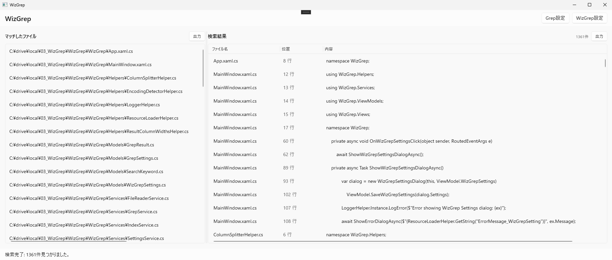
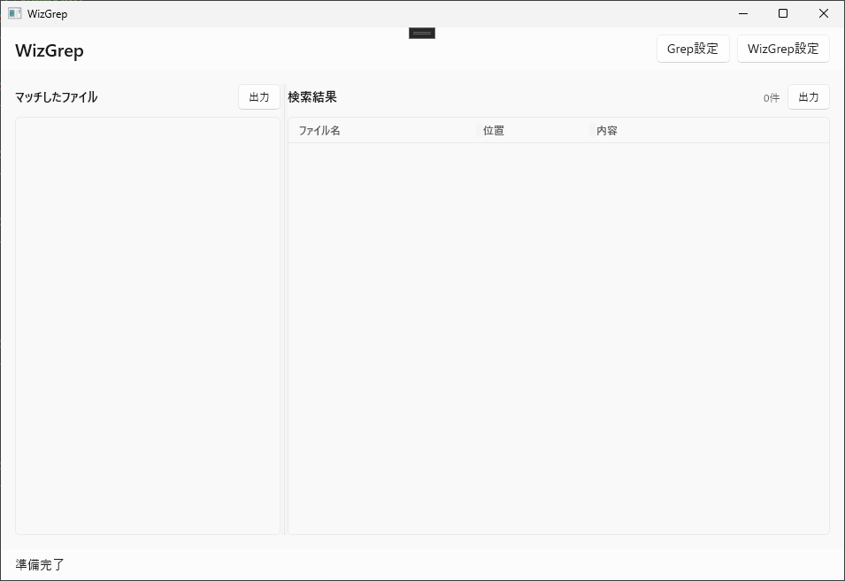
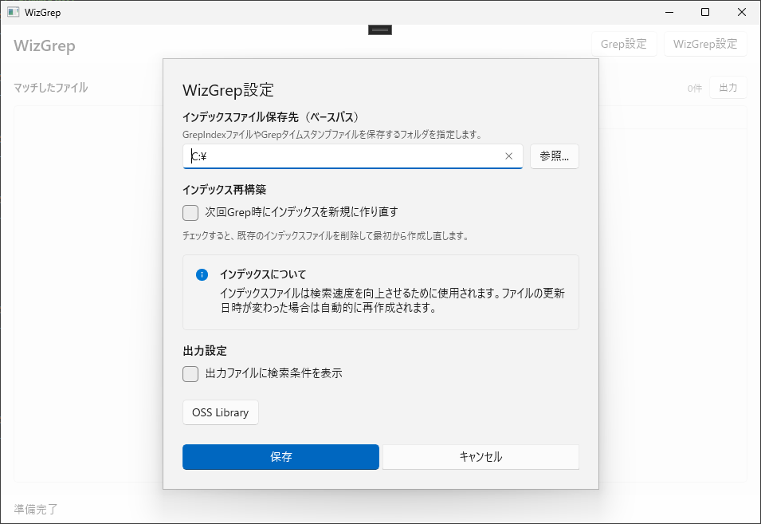
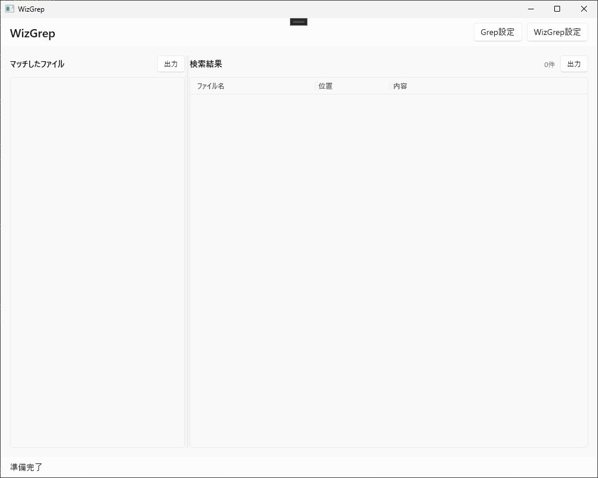
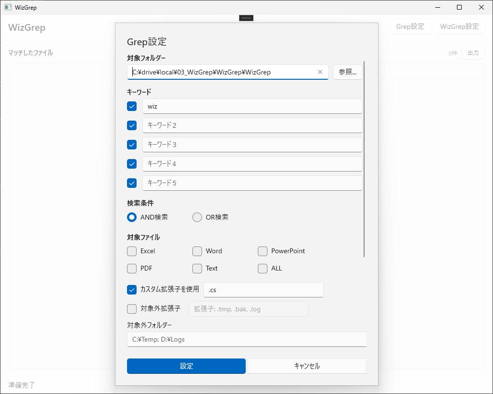

対応ファイル
- テキストファイル（txt）
- Excel ファイル（xlsx, xlsm, xls）
- Word ファイル（docx, docm, doc）
- PowerPoint ファイル（pptx, pptm, ppt）
その他の拡張子も、テキストファイルとして grep できます。
WizGrep Guide

その他の拡張子も、テキストファイルとして grep できます。
最大 5 キーワードまで設定できます。
AND 検索と OR 検索の両方に対応しています。
Office ファイルではセルや本文だけでなく、図形テキストやコメントも検索できます。
grep する拡張子を指定することで、その拡張子のファイルを検索できます。
grep したくないファイル拡張子を指定できます。
.git など除外したいフォルダーを指定できます。
大文字小文字を区別するかどうかを切り替えられます。
grep キーワードを正規表現として扱うかどうかを選択できます。
検索中にヒットしたファイルを随時表示できます。OFF の場合は検索完了後にまとめて表示します。
Excel 内の途中改行を除去し、改行をまたぐ文字列でも検索しやすくできます。
表示値を検索対象にするか、数式を検索対象にするかを切り替えられます。

インデックスファイルは Grep 速度向上のためにファイル情報を保持しておくテキストファイルです。

設定内容を保存して、以後の検索や出力に反映します。

対象フォルダー、キーワード、検索条件、対象ファイル、カスタム拡張子、対象外フォルダーなどを設定して検索を実行します。

Grep 完了後は、複数の操作が可能です。
最終更新日: 2026年4月18日
WizGrep は、ユーザーが指定したローカルフォルダー内のファイルを横断検索する Windows デスクトップアプリです。本ポリシーは、WizGrep アプリ本体がどのような情報を取り扱うかを説明するものです。Microsoft Store、Windows、または第三者サービスが提供する機能については、それぞれの提供者のポリシーが適用されます。
検索キーワード、対象フォルダー、対象拡張子、除外拡張子、除外フォルダー、正規表現設定、大文字小文字設定、Excel 検索対象設定などを、次回起動時にも利用できるようローカル設定に保存します。
インデックス保存先、インデックス再構築設定、出力時に検索条件を付与するかどうかの設定をローカルに保存します。
アプリは、ユーザーが指定したフォルダー内のファイルを読み取り、検索実行とインデックス作成のために内容をローカルで処理します。対応形式には txt、PDF、Excel、Word、PowerPoint 等が含まれます。
インデックス機能を使用する場合、検索対象ファイルのパス、位置情報、抽出テキスト等を含むインデックスファイルとタイムスタンプファイルを、ユーザーが指定した保存先または既定のローカル保存先に作成します。
アプリは、エラー調査のために一時フォルダーへログファイルを出力することがあります。ログには、例外情報、スタックトレース、ファイルパス等が含まれる場合があります。
ユーザーがエクスポート機能を実行した場合、マッチしたファイル一覧や検索結果が、ユーザーの指定した保存先へテキストファイルとして出力されます。
WizGrep アプリ本体は、検索対象ファイルの内容、検索キーワード、設定情報、ログ情報を、開発者のサーバーや第三者へ自動送信しません。広告 SDK、アプリ内解析、アカウント連携、クラウド同期、独自のテレメトリ送信も実装していません。
ただし、ユーザーが次の操作を行った場合、その操作に必要な範囲で情報が他のアプリや指定先ファイルへ渡されます。
本アプリは Windows デスクトップアプリとして動作し、ユーザーが選択または指定したフォルダー・ファイルに対して検索、インデックス作成、出力を行います。アプリは、検索やファイル起動などのデスクトップ動作のためにフル トラスト実行機能を使用しますが、ユーザーの明示的な操作なく任意の個人情報を外部送信することはありません。
WizGrep は、検索対象としてユーザーの文書ファイルを扱う性質上、機密情報や個人情報を含むテキストをローカル環境で処理する可能性があります。そのため、インデックス保存先やエクスポート先には、ユーザー自身の管理下にある保存場所を指定することを推奨します。
本ポリシーは WizGrep アプリ本体に適用されます。Microsoft Store、Windows OS、既定の関連付けアプリ、またはユーザーが保存先として選択した第三者サービスや外部ストレージの取り扱いについては、それぞれの提供者のポリシーをご確認ください。